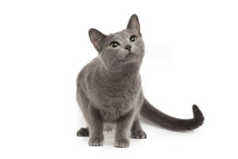
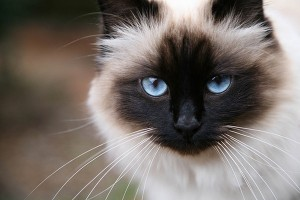

-
Scottish Fold

Image credit: breedofcats.wordpress.com
A Scottish Fold is known for its "folded ears". Another odd thing about Scottish Fold is that they like to flat out on the floor like a little frog, sitting up. However, it is a sweet, calm cat that enjoys being around people.
-
Russian Blue

Image credit: aubreyamic.com
A Russian Blue is known for their bright vivid green gorgeous eyes. They are playful, and loves to chase after toys. They love to spend hours amysing itself and doen not mind being left at home alone, but will be very very happy to see you when you do arrive.
-
Birman Cat

Image credit: pluepets.net
A Birman has a distinctive siky coat and deep blue eyes. It is like a little dog, always following you everywhere you go. Some of them are talkative. If you want a sociable cat, this is your cat.